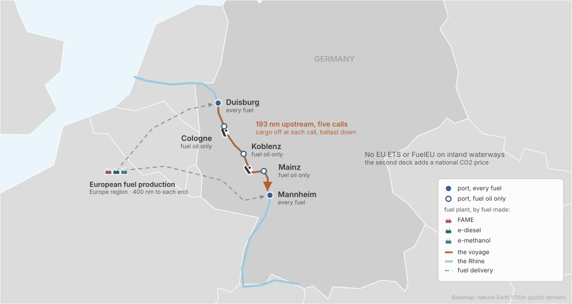
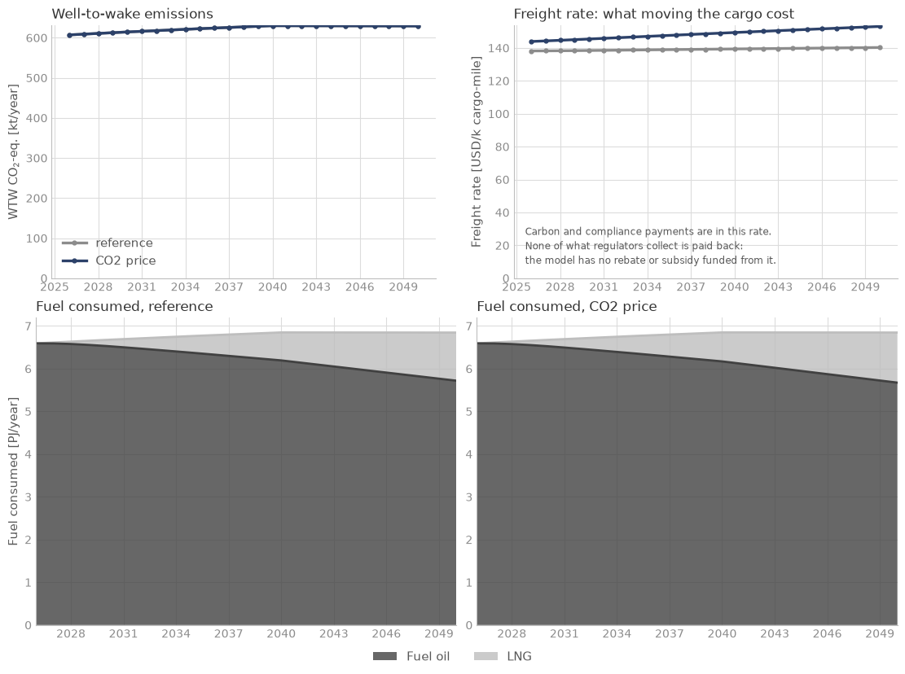
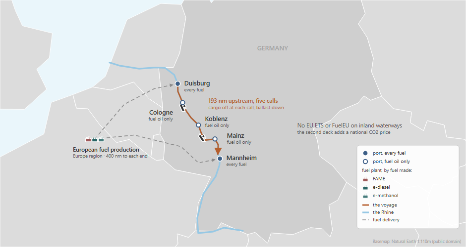

Inland waterways in Germany#
Specific trades · decks simulations/examples/example_6/

Does a national CO2 price move owners to drop-in fuels or new engines?
The case#

Ships: 300 large Rhine motor cargo vessels, all on fuel oil in 2026. The library has no inland vessel, so the ship is a library general cargo ship resized for the Rhine (INVENTED). The owners can burn a drop-in fuel (FAME, e-diesel) in the ships they have, or order LNG or methanol ships.
Route: one route up the Rhine, Duisburg, Cologne, Koblenz, Mainz and Mannheim, a quarter of the cargo discharged at each call, then back to Duisburg in ballast.
Fuels: fuel oil at every port; LNG, FAME, e-diesel and e-methanol at Duisburg and Mannheim only, made in Europe.
Policy: two decks: no policy, and Germany’s national CO2 price, 65 USD/t in 2026 to 150 in 2050 (INVENTED), as a copy of the library’s EU ETS on the five ports. EU ETS and FuelEU do not cover inland waterways.
Horizon: 2026 to 2050, yearly.
Results#

The CO2 price raises the freight rate in 2050 from 140 to 153 USD per thousand cargo-miles and leaves emissions where they were, 607 kt CO2e in 2026 and 629 kt in 2050: no drop-in fuel is bunkered in either deck, and the owners pay the price.
The deck#
# SPDX-FileCopyrightText: 2026 Fonden Mærsk Mc-Kinney Møller Center for Zero Carbon Shipping
# SPDX-License-Identifier: CC-BY-4.0
# RHINE INLAND DRY CARGO, Duisburg - Mannheim, 2026-2050, yearly steps.
# REFERENCE deck: no policy. EU ETS and FuelEU Maritime do not cover inland
# waterways, so DefaultRegulation is not loaded. example_6_co2_price.nav differs from this
# deck in one Include line only.
#
# Ships: built from the library's general cargo vessels (general_cargo_ice_oil,
# _ice_methane, _ice_methanol) and resized for the Rhine. The fuel-system and tank
# costs are a seagoing ship's. No ammonia ships. No fuel conversion.
# AllowSpeedManagement is FALSE: the waterway sets the speed.
# DefaultConverterAvailable is not loaded (it needs the library's 23 fleets), so
# every vessel type is orderable from year one rather than phased in.
#
# INVENTED placeholders (Variables/Curves/Forecasts in includes/placeholders.inc;
# plain numbers in includes/route.inc and includes/bunker_logistics.inc):
# - 300 ships in 2026, aged evenly 0-39 years
# - 3,000 t capacity, 40-year lifetime, 6 M USD hull newbuild price, 1.5 MW propulsion
# - propulsion power vs speed: 4 kn 0.25, 6 kn 0.6, 8 kn 1.1, 9 kn 1.45 MW
# - auxiliary 0.1 MW at sea, 0.05 MW in port, 0.2 MW generators
# - route distances 50/52/51/40/193 nm, speeds 7 kn up and 8 kn back,
# 1 day in port, loads 1.0/0.75/0.5/0.25/0
# - bunker logistics: 400 nm to duisburg and mannheim, 0.03 USD/t/nm
# - CO2 price 65 USD/t (2026) to 150 USD/t (2050) [co2_price.nav only]
# GIVEN by the prompt: feedstock shares 0.02 (used cooking oil), 0.02 (biogenic CO2).
# Also a deck choice: producers deliver 50/50 to duisburg and mannheim.
DEFINE {
Load DefaultModelDefinition
Include "includes/placeholders.inc"
# ---- fleet and route ----
Include "includes/fleet.inc"
Include "includes/route.inc"
Include "includes/ports.inc"
Include "includes/bunker_logistics.inc"
# ---- fuel ----
Include "includes/fuel_production.inc"
Include "includes/regions.inc"
Include "includes/producer.inc"
Load DefaultEmission
# ---- policy: none ----
# ---- decision processes ----
Load DefaultCalibration
# ---- export ----
Include "includes/report.inc"
Load DefaultReport
Load DefaultPlot
}
EVENTS {
Load DefaultTimeStepYearly
}
# SPDX-FileCopyrightText: 2026 Fonden Mærsk Mc-Kinney Møller Center for Zero Carbon Shipping
# SPDX-License-Identifier: CC-BY-4.0
# RHINE INLAND DRY CARGO, Duisburg - Mannheim, 2026-2050, yearly steps.
# CO2 PRICE deck: the reference deck plus Germany's national CO2 price. EU ETS and
# FuelEU Maritime do not cover inland waterways, so DefaultRegulation is not
# loaded. example_6_reference.nav differs from this deck in one Include line only.
#
# Ships: built from the library's general cargo vessels (general_cargo_ice_oil,
# _ice_methane, _ice_methanol) and resized for the Rhine. The fuel-system and tank
# costs are a seagoing ship's. No ammonia ships. No fuel conversion.
# AllowSpeedManagement is FALSE: the waterway sets the speed.
# DefaultConverterAvailable is not loaded (it needs the library's 23 fleets), so
# every vessel type is orderable from year one rather than phased in.
#
# INVENTED placeholders (Variables/Curves/Forecasts in includes/placeholders.inc;
# plain numbers in includes/route.inc and includes/bunker_logistics.inc):
# - 300 ships in 2026, aged evenly 0-39 years
# - 3,000 t capacity, 40-year lifetime, 6 M USD hull newbuild price, 1.5 MW propulsion
# - propulsion power vs speed: 4 kn 0.25, 6 kn 0.6, 8 kn 1.1, 9 kn 1.45 MW
# - auxiliary 0.1 MW at sea, 0.05 MW in port, 0.2 MW generators
# - route distances 50/52/51/40/193 nm, speeds 7 kn up and 8 kn back,
# 1 day in port, loads 1.0/0.75/0.5/0.25/0
# - bunker logistics: 400 nm to duisburg and mannheim, 0.03 USD/t/nm
# - CO2 price 65 USD/t (2026) to 150 USD/t (2050) [this deck only]
# GIVEN by the prompt: feedstock shares 0.02 (used cooking oil), 0.02 (biogenic CO2).
# Also a deck choice: producers deliver 50/50 to duisburg and mannheim.
DEFINE {
Load DefaultModelDefinition
Include "includes/placeholders.inc"
# ---- fleet and route ----
Include "includes/fleet.inc"
Include "includes/route.inc"
Include "includes/ports.inc"
Include "includes/bunker_logistics.inc"
# ---- fuel ----
Include "includes/fuel_production.inc"
Include "includes/regions.inc"
Include "includes/producer.inc"
Load DefaultEmission
# ---- policy: Germany's CO2 price ----
Include "includes/co2_price.inc"
# ---- decision processes ----
Load DefaultCalibration
# ---- export ----
Include "includes/report.inc"
Load DefaultReport
Load DefaultPlot
}
EVENTS {
Load DefaultTimeStepYearly
}
# SPDX-FileCopyrightText: 2026 Fonden Mærsk Mc-Kinney Møller Center for Zero Carbon Shipping
# SPDX-License-Identifier: CC-BY-4.0
# PLACEHOLDERS - every INVENTED or GIVEN number of this case that can be a
# Variable, Curve or Forecast, in one place. Replace them here.
#
# Plain numbers that Navigate takes only as numbers live in their own files:
# includes/route.inc distances, speeds, port days, loads (INVENTED)
# includes/bunker_logistics.inc 400 nm plant-to-port, 0.03 USD/t/nm (INVENTED)
# ---- fleet (INVENTED) -------------------------------------------------------
Variable "rhine_initial_vessels" {
Value = 300 # INVENTED: ships in 2026
}
Curve "rhine_age_dist" {
# INVENTED: ships aged evenly from 0 to 39 years (1/40 each)
Table = [
0 0.025
1 0.025
2 0.025
3 0.025
4 0.025
5 0.025
6 0.025
7 0.025
8 0.025
9 0.025
10 0.025
11 0.025
12 0.025
13 0.025
14 0.025
15 0.025
16 0.025
17 0.025
18 0.025
19 0.025
20 0.025
21 0.025
22 0.025
23 0.025
24 0.025
25 0.025
26 0.025
27 0.025
28 0.025
29 0.025
30 0.025
31 0.025
32 0.025
33 0.025
34 0.025
35 0.025
36 0.025
37 0.025
38 0.025
39 0.025
]
}
Variable "rhine_nominal_capacity" {
Value = 3000 # INVENTED: t per ship
}
Variable "rhine_lifetime" {
Value = 40 # INVENTED: years
}
Forecast "rhine_hull_capex" {
# INVENTED: 6 M USD newbuild price for the hull
Table = [
"01-01-2025" 6e6
"01-01-2050" 6e6
]
}
Variable "rhine_propulsion_power_capacity" {
Value = 1.5 # INVENTED: MW
}
Curve "rhine_propulsion_load" {
# INVENTED: x = knots ; y = MW
Table = [
4 0.25
6 0.6
8 1.1
9 1.45
]
Extrapolate = LINEAR
}
Variable "rhine_electrical_load_sea" {
Value = 0.1 # INVENTED: MW
}
Variable "rhine_electrical_load_port" {
Value = 0.05 # INVENTED: MW
}
Variable "rhine_electrical_power_capacity" {
Value = 0.2 # INVENTED: MW, generators
}
# ---- feedstock shares (GIVEN by the prompt as this fleet's share) -----------
Variable "rhine_share_used_cooking_oil" {
Value = 0.02 # GIVEN: this fleet's share of used_cooking_oil_share_shipping
}
Variable "rhine_share_biogenic_carbon_dioxide" {
Value = 0.02 # GIVEN: this fleet's share of carbon_dioxide_biogenic_share_shipping
}
# ---- Germany's CO2 price (INVENTED), used by includes/co2_price.inc ---------
Forecast "germany_co2_price" {
# INVENTED: USD per t CO2, 65 in 2026 rising linearly to 150 in 2050
Table = [
"01-01-2026" 65
"01-01-2050" 150
]
}
# SPDX-FileCopyrightText: 2026 Fonden Mærsk Mc-Kinney Møller Center for Zero Carbon Shipping
# SPDX-License-Identifier: CC-BY-4.0
# FLEET - large Rhine motor cargo vessels, built from the library's general cargo
# vessels and resized with the INVENTED values of placeholders.inc.
# The fuel-system and tank costs are a seagoing ship's.
# Each vessel gets its own propulsion and electrical Converters (the engine power
# sits there) and its own PowerSystem naming them. Heat converter, tanks, fuel
# options and machinery costs are the library's.
Copy Converter "propulsion_ice_oil_general_cargo" "rhine_propulsion_oil"
Copy Converter "propulsion_ice_methane_general_cargo" "rhine_propulsion_methane"
Copy Converter "propulsion_ice_methanol_general_cargo" "rhine_propulsion_methanol"
Copy Converter "electrical_ice_oil_general_cargo" "rhine_electrical_oil"
Copy Converter "electrical_ice_methane_general_cargo" "rhine_electrical_methane"
Copy Converter "electrical_ice_methanol_general_cargo" "rhine_electrical_methanol"
Converter "rhine_propulsion_*" {
PowerCapacity = Variable("rhine_propulsion_power_capacity") # INVENTED 1.5 MW
}
Converter "rhine_electrical_*" {
PowerCapacity = Variable("rhine_electrical_power_capacity") # INVENTED 0.2 MW
}
Copy PowerSystem "ice_oil_general_cargo" "rhine_ice_oil"
Copy PowerSystem "ice_methane_general_cargo" "rhine_ice_methane"
Copy PowerSystem "ice_methanol_general_cargo" "rhine_ice_methanol"
PowerSystem "rhine_ice_oil" {
Propulsion = Converter("rhine_propulsion_oil")
Electrical = Converter("rhine_electrical_oil")
}
PowerSystem "rhine_ice_methane" {
Propulsion = Converter("rhine_propulsion_methane")
Electrical = Converter("rhine_electrical_methane")
}
PowerSystem "rhine_ice_methanol" {
Propulsion = Converter("rhine_propulsion_methanol")
Electrical = Converter("rhine_electrical_methanol")
}
Copy Vessel "general_cargo_ice_oil" "rhine_oil"
Copy Vessel "general_cargo_ice_methane" "rhine_lng"
Copy Vessel "general_cargo_ice_methanol" "rhine_methanol"
Vessel "rhine_*" {
PropulsionLoad = Curve("rhine_propulsion_load") # INVENTED
ElectricalLoadAtSea = Variable("rhine_electrical_load_sea") # INVENTED 0.1 MW
ElectricalLoadInPort = Variable("rhine_electrical_load_port") # INVENTED 0.05 MW
NominalCapacity = Variable("rhine_nominal_capacity") # INVENTED 3000 t
Lifetime = Variable("rhine_lifetime") # INVENTED 40 years
CAPEX = Forecast("rhine_hull_capex") # INVENTED 6 M USD, hull only
}
Vessel "rhine_oil" { PowerSystem = PowerSystem("rhine_ice_oil") }
Vessel "rhine_lng" { PowerSystem = PowerSystem("rhine_ice_methane") }
Vessel "rhine_methanol" { PowerSystem = PowerSystem("rhine_ice_methanol") }
Fleet "rhine_fleet" {
Vessels = [Vessel("rhine_oil"), Vessel("rhine_lng"), Vessel("rhine_methanol")]
InitialVessels = Variable("rhine_initial_vessels") # INVENTED 300
InitialSplit = [1.0, 0.0, 0.0] # all on fuel oil
InitialAgeDistribution = [Curve("rhine_age_dist"), 0, 0]
# Library trade growth of the general cargo class (not inland-specific).
TradeGrowth = Forecast("trade_growth_general_cargo")
# No set_fuel_conversion_cost: ships cannot be converted to another fuel.
# Orderbooks omitted: the library's are sized for the world fleet.
AllowSpeedManagement = FALSE # the waterway sets the speed
}
# SPDX-FileCopyrightText: 2026 Fonden Mærsk Mc-Kinney Møller Center for Zero Carbon Shipping
# SPDX-License-Identifier: CC-BY-4.0
# ROUTE - Rhine, Duisburg - Cologne - Koblenz - Mainz - Mannheim, then straight
# back to Duisburg. Each entry is the leg (one-way sailing to the next port)
# leaving the port at that index. ALL values below are INVENTED placeholders.
Vessel "rhine_*" {
Route = Route("rhine_route")
}
Route "rhine_route" {
RouteType = ROUND_TRIP
Ports = [Port("duisburg"), Port("cologne"), Port("koblenz"), Port("mainz"), Port("mannheim")]
# INVENTED: one day in port per call
PortDurations = [1, 1, 1, 1, 1]
# INVENTED: nautical miles; the last leg is Mannheim back to Duisburg
Distances = [50, 52, 51, 40, 193]
# INVENTED: 7 kn upstream, 8 kn back (speed through the water, no current)
Speeds = [7, 7, 7, 7, 8]
# INVENTED: a quarter of the cargo discharged at each of Cologne, Koblenz and
# Mainz, the rest at Mannheim; ballast on the way back
CapacityUtilizations = [1.0, 0.75, 0.5, 0.25, 0]
}
# SPDX-FileCopyrightText: 2026 Fonden Mærsk Mc-Kinney Møller Center for Zero Carbon Shipping
# SPDX-License-Identifier: CC-BY-4.0
# PORTS - what is sold where. Fuel oil at every port; LNG, FAME, e-diesel and
# e-methanol at Duisburg and Mannheim only. The fuels imported only so that the
# copied regulation parses are bunkerable nowhere.
Port "duisburg" {
set_bunkering_allowed("fossil_fuel_oil", TRUE)
set_bunkering_allowed("liquefied_natural_gas", TRUE)
set_bunkering_allowed("fatty_acid_methyl_ester", TRUE)
set_bunkering_allowed("diesel_electro", TRUE)
set_bunkering_allowed("methanol_electro", TRUE)
}
Port "mannheim" {
set_bunkering_allowed("fossil_fuel_oil", TRUE)
set_bunkering_allowed("liquefied_natural_gas", TRUE)
set_bunkering_allowed("fatty_acid_methyl_ester", TRUE)
set_bunkering_allowed("diesel_electro", TRUE)
set_bunkering_allowed("methanol_electro", TRUE)
}
Port "cologne" {
set_bunkering_allowed("fossil_fuel_oil", TRUE)
set_bunkering_allowed("liquefied_natural_gas", FALSE)
set_bunkering_allowed("fatty_acid_methyl_ester", FALSE)
set_bunkering_allowed("diesel_electro", FALSE)
set_bunkering_allowed("methanol_electro", FALSE)
}
Port "koblenz" {
set_bunkering_allowed("fossil_fuel_oil", TRUE)
set_bunkering_allowed("liquefied_natural_gas", FALSE)
set_bunkering_allowed("fatty_acid_methyl_ester", FALSE)
set_bunkering_allowed("diesel_electro", FALSE)
set_bunkering_allowed("methanol_electro", FALSE)
}
Port "mainz" {
set_bunkering_allowed("fossil_fuel_oil", TRUE)
set_bunkering_allowed("liquefied_natural_gas", FALSE)
set_bunkering_allowed("fatty_acid_methyl_ester", FALSE)
set_bunkering_allowed("diesel_electro", FALSE)
set_bunkering_allowed("methanol_electro", FALSE)
}
Port "*" {
set_bunkering_allowed("methanol_bio", FALSE)
set_bunkering_allowed("methane_bio", FALSE)
set_bunkering_allowed("methane_electro", FALSE)
set_bunkering_allowed("ammonia_blue", FALSE)
set_bunkering_allowed("ammonia_electro", FALSE)
# Fossil prices and upstream emissions at the library's values (as DefaultPort).
set_bunker_price_overwrite("fossil_fuel_oil", Forecast("fossil_fuel_oil_price_global"))
set_bunker_wtt_overwrite("fossil_fuel_oil", "carbon_dioxide", Forecast("fossil_fuel_oil_wtt_carbon_dioxide"))
set_bunker_price_overwrite("liquefied_natural_gas", Forecast("liquefied_natural_gas_price_global"))
set_bunker_wtt_overwrite("liquefied_natural_gas", "carbon_dioxide", Forecast("liquefied_natural_gas_wtt_carbon_dioxide"))
set_bunker_wtt_overwrite("liquefied_natural_gas", "methane", Forecast("liquefied_natural_gas_wtt_methane"))
}
# SPDX-FileCopyrightText: 2026 Fonden Mærsk Mc-Kinney Møller Center for Zero Carbon Shipping
# SPDX-License-Identifier: CC-BY-4.0
# BUNKER LOGISTICS - plant to bunker port. Fuel oil and LNG are market fuels.
# Plain numbers only, both INVENTED (listed in placeholders.inc as comments).
BunkerLogistics {
LiquidMarketFuels = [Fuel("fossil_fuel_oil"), Fuel("liquefied_natural_gas")]
# INVENTED: nautical miles from the European plants
set_distance("europe", "duisburg", 400)
set_distance("europe", "mannheim", 400)
# INVENTED: USD per ton per nautical mile
set_transport_cost("*", 0.03)
}
# SPDX-FileCopyrightText: 2026 Fonden Mærsk Mc-Kinney Møller Center for Zero Carbon Shipping
# SPDX-License-Identifier: CC-BY-4.0
# FUEL PRODUCTION - fuel oil and LNG (market fuels), FAME, e-diesel and
# e-methanol, all made in Europe with the library's plants. Region, Source and
# CostOfCapital are set here as DefaultPlant does (Import/Copy brings none).
# ---- fossil (market fuels, no production chain) -----------------------------
Import Fuel "fossil_fuel_oil"
Import Fuel "liquefied_natural_gas"
# ---- fuels named by the copied regulation but not used by this case ---------
# (imported only so that Regulation "co2_price_germany" parses)
Import Fuel "methanol_bio"
Import Fuel "methane_bio"
Import Fuel "methane_electro"
Import Fuel "ammonia_blue"
Import Fuel "ammonia_electro"
# ---- FAME from used cooking oil ---------------------------------------------
Import Fuel "fatty_acid_methyl_ester"
Import Process "fatty_acid_methyl_ester_synthesis"
Import Feedstock "used_cooking_oil"
Import Feedstock "methanol_grey"
Copy Plant "plant_fatty_acid_methyl_ester" "plant_fatty_acid_methyl_ester_europe"
Plant "plant_fatty_acid_methyl_ester_europe" {
Region = Region("europe")
Source = Source("grid")
CostOfCapital = Forecast("cost_of_capital_plant_bio_europe")
}
# ---- e-diesel ---------------------------------------------------------------
Import Fuel "diesel_electro"
Import Process "diesel_synthesis_electro_alkaline"
Copy Plant "plant_diesel_electro_alkaline" "plant_diesel_electro_alkaline_europe"
Plant "plant_diesel_electro_alkaline_europe" {
Region = Region("europe")
Source = Source("renewable")
CostOfCapital = Forecast("cost_of_capital_plant_electro_europe")
}
# ---- e-methanol -------------------------------------------------------------
Import Fuel "methanol_electro"
Import Process "methanol_synthesis_electro_alkaline"
Copy Plant "plant_methanol_electro_alkaline" "plant_methanol_electro_alkaline_europe"
Plant "plant_methanol_electro_alkaline_europe" {
Region = Region("europe")
Source = Source("renewable")
CostOfCapital = Forecast("cost_of_capital_plant_electro_europe")
}
# ---- shared inputs ----------------------------------------------------------
Import Process "hydrogen_electro_alkaline"
Import Process "electrolysis_stack_alkaline"
Import Feedstock "carbon_dioxide_biogenic"
Import Feedstock "demineralized_water"
Import Source "renewable"
Import Source "grid"
# SPDX-FileCopyrightText: 2026 Fonden Mærsk Mc-Kinney Møller Center for Zero Carbon Shipping
# SPDX-License-Identifier: CC-BY-4.0
# REGIONS - Europe, where all the fuels are made. Import Region brings Europe's own
# lines (power prices, grid emissions, used cooking oil cost, FAME process). The
# lines for the other processes and feedstocks are restated below from the Region "*"
# block of assumptions/modules/installation/default_region.inc.
Import Region "europe"
Region "*" {
# feedstocks
set_feedstock_cost("carbon_dioxide_biogenic", Forecast("carbon_dioxide_biogenic_cost"))
set_feedstock_cost("demineralized_water", Forecast("demineralized_water_cost"))
set_feedstock_cost("methanol_grey", Forecast("methanol_grey_cost"))
set_feedstock_wtt("carbon_dioxide_biogenic", "carbon_dioxide", Forecast("carbon_dioxide_biogenic_capture_rate"))
set_feedstock_wtt("methanol_grey", "carbon_dioxide", Forecast("methanol_grey_wtt"))
# e-hydrogen (alkaline)
set_process_capex("electrolysis_stack_alkaline", Timetable("electrolysis_stack_alkaline_capex"))
set_process_opex("electrolysis_stack_alkaline", Timetable("electrolysis_stack_alkaline_opex"))
set_process_energy("electrolysis_stack_alkaline", Forecast("electrolysis_stack_alkaline_energy"))
set_process_lifetime("electrolysis_stack_alkaline", Forecast("electrolysis_stack_alkaline_lifetime"))
set_process_replacement("electrolysis_stack_alkaline", Forecast("electrolysis_stack_alkaline_replacement"))
set_process_capex("hydrogen_electro_alkaline", Timetable("hydrogen_electro_alkaline_capex"))
set_process_opex("hydrogen_electro_alkaline", Timetable("hydrogen_electro_alkaline_opex"))
set_process_energy("hydrogen_electro_alkaline", Forecast("hydrogen_electro_alkaline_energy"))
set_process_lifetime("hydrogen_electro_alkaline", Forecast("hydrogen_electro_alkaline_lifetime"))
set_process_replacement("hydrogen_electro_alkaline", Forecast("hydrogen_electro_alkaline_replacement"))
# e-methanol
set_process_capex("methanol_synthesis_electro_*", Timetable("methanol_synthesis_electro_capex"))
set_process_opex("methanol_synthesis_electro_*", Timetable("methanol_synthesis_electro_opex"))
set_process_energy("methanol_synthesis_electro_*", Forecast("methanol_synthesis_electro_energy"))
set_process_wtt("methanol_synthesis_electro_*", "carbon_dioxide", <Variable("methanol_carbon_dioxide_conversion") - Variable("carbon_dioxide_per_methanol")>)
# e-diesel
set_process_capex("diesel_synthesis_electro_*", Timetable("diesel_synthesis_electro_capex"))
set_process_opex("diesel_synthesis_electro_*", Timetable("diesel_synthesis_electro_opex"))
set_process_energy("diesel_synthesis_electro_*", Forecast("diesel_synthesis_electro_energy"))
set_process_wtt("diesel_synthesis_electro_*", "carbon_dioxide", <Variable("diesel_carbon_dioxide_conversion") - Variable("carbon_dioxide_per_diesel_electro")>)
# plant to quayside within a region
set_transport_cost("truck", 0.0)
set_transport_wtt("truck", "carbon_dioxide", Forecast("truck_emissions"))
}
Import Transport "truck"
# SPDX-FileCopyrightText: 2026 Fonden Mærsk Mc-Kinney Møller Center for Zero Carbon Shipping
# SPDX-License-Identifier: CC-BY-4.0
# PRODUCERS - the agents that decide whether to build another plant. The library's
# feedstock ceilings are what all shipping may use; this fleet gets a share of them
# (GIVEN by the prompt: 0.02 of the used cooking oil and 0.02 of the biogenic CO2,
# in placeholders.inc). The library's biogenic CO2 pool is used as it is.
Producer "producer_fame" {
Plants = [Plant("plant_fatty_acid_methyl_ester_europe")]
# as the library's epc_fame_europe
MaximumDevelopment = 1000
set_feed_constraint("used_cooking_oil", <Forecast("used_cooking_oil_availability_europe") * Forecast("used_cooking_oil_share_shipping") * Variable("rhine_share_used_cooking_oil")>)
}
Producer "producer_efuel" {
Plants = [Plant("plant_diesel_electro_alkaline_europe"),
Plant("plant_methanol_electro_alkaline_europe")]
# as the library's epc_global
MaximumDevelopment = <Forecast("epc_global_capacity_mid") * Forecast("epc_global_share_shipping")>
set_feed_constraint("carbon_dioxide_biogenic", <Forecast("carbon_dioxide_biogenic_availability") * Forecast("carbon_dioxide_biogenic_share_shipping") * Variable("rhine_share_biogenic_carbon_dioxide")>)
}
# All fuel is made in Europe; where it is delivered follows bunker_logistics.inc.
Producer "*" {
set_export_distribution("duisburg", 0.5)
set_export_distribution("mannheim", 0.5)
}
# SPDX-FileCopyrightText: 2026 Fonden Mærsk Mc-Kinney Møller Center for Zero Carbon Shipping
# SPDX-License-Identifier: CC-BY-4.0
# GERMANY'S NATIONAL CO2 PRICE on inland waterways, as a copy of the library's
# EU ETS regulation: an absolute price on the CO2-equivalent burned on board,
# no free allowance, biofuels and e-fuels counted as zero CO2. A Regulation, not a
# Levy, so that the price enters the expected costs of the newbuild choice.
# Covers every ship (set_include_vessel is TRUE in the copied regulation; stated
# again below because Navigate's code default is FALSE).
# The coverage fractions are left as in eu_ets: every leg is between two covered
# ports, so IntraFraction = 1 applies throughout.
Copy Regulation "eu_ets" "co2_price_germany"
Regulation "co2_price_germany" {
# the five ports of the route
Jurisdiction = [Port("duisburg"), Port("cologne"), Port("koblenz"), Port("mainz"), Port("mannheim")]
# INVENTED: USD per t CO2, 65 in 2026 to 150 in 2050 (placeholders.inc)
RemedialCost = Forecast("germany_co2_price")
set_include_vessel("*", TRUE)
}
Report "report_co2_price_germany" {
Directory = "./reports"
add_regulation_property("co2_price_germany", RemedialExpenses)
add_regulation_property("co2_price_germany", FlexibilityExpenses)
add_regulation_property("co2_price_germany", SurplusRevenue)
}
# SPDX-FileCopyrightText: 2026 Fonden Mærsk Mc-Kinney Møller Center for Zero Carbon Shipping
# SPDX-License-Identifier: CC-BY-4.0
# REPORT - numbers per vessel type and fleet, besides DefaultReport's global sheet.
Report "output" {
Directory = "./reports"
add_vessel_property("rhine_*", ConsumedEnergy)
add_vessel_property("rhine_*", ActualSpeed)
add_vessel_property("rhine_*", CargoMiles)
add_vessel_property("rhine_*", InvestmentFreightRate)
add_vessel_property("rhine_*", InstantaneousFreightRate)
add_fleet_property("rhine_fleet", ExistingVessels)
add_fleet_property("rhine_fleet", Newbuilds)
add_fleet_property("rhine_fleet", FuelExpenses)
add_fleet_property("rhine_fleet", RegulationExpenses)
add_fleet_property("rhine_fleet", TotalConsumedMass)
# delivered bunker price per unit of energy, by port
add_port_property("*", BunkerIntensityPrice)
# levelised cost per GJ of each plant, even when none is built
add_plant_property("*", InvestmentIntensityCost)
}
Build it with an AI assistant#
These decks were built from the prompt below by an assistant that saw only the prompt. A trade under a national policy starts from it. Session 5 shows how to use it.
Full prompt for this case
The study. Dry-cargo motor vessels on the Rhine between Duisburg and Mannheim, 2026 to 2050, run twice: without policy, and with a CO2 price on the fossil fuel they burn, standing for Germany’s national CO2 price. The price is a copy of the library’s EU ETS regulation moved to the two German ports, so only its price path is invented. The question is whether that price moves the owners to drop-in fuels (biodiesel, e-diesel) in the ships they have, or to new engines.
What comes from the library. The engines, tanks and fuel options of the library’s general cargo ships, the fuels and their prices, and the European fuel production.
What is INVENTED. The library has no inland vessel, so the ship is a library general cargo ship resized for the Rhine: its capacity, power, propulsion curve, price and lifetime are placeholders. The route, fleet size, bunker logistics and the CO2 price path are invented too. Replace the placeholders with sourced data before quoting any result.
Limits. Navigate has no river current, locks or low-water periods, and no battery-electric ship, which is one of the options German inland operators are actually weighing.
Tested: 2026-10-16. The final prompt passed every check above on the first
attempt, built cold and also through Session 5’s start-up prompt from a different
inland case (container barges from Duisburg to Frankfurt). Three earlier rounds
found the traps now written in building-a-deck.md. Both builds found that at 65
to 150 USD/t the owners pay the price rather than switch fuel, and order a few
more LNG ships; the drop-in fuels need roughly 440 USD/t (biodiesel) to 800-1,100
USD/t (e-diesel). Treat that as a property of the placeholders, not of the Rhine.
2026-10-26, as the model a start-up prompt chose for a different case (Norwegian coastal cargo ships and ferries under Norway’s CO2 tax): the chain built and ran cold with no warnings, and found the same: biofuels need roughly 440 USD/t, and the owners pay the tax, order a few more LNG ships and slow down.
2026-10-30, with the route’s five ports (before, it ran between Duisburg and
Mannheim only): built cold on Sonnet and on Haiku, both decks ran with no
warnings, and the two builds agree to the tonne. Same finding: by 2050 the price
moves about two newbuilds to LNG and emissions by less than 0.01 %; FAME would
need about 430 USD/t. The Sonnet build is the deck in
simulations/examples/example_6/.

It was one of Session 5’s examples until 2026-10-28.
You are helping me build a simulation study for Navigate, the shipping
decarbonisation model. Write the files yourself; do not only
describe them.
Before writing anything, find the Navigate repository on my machine (a folder
usually named navigate-zcs; ask me where it is if you cannot find it), then read
docs/workshop/building-a-deck.md in it and follow it. It
says how Navigate works, how to run a deck and read its results, and the rules
every deck follows. This prompt gives the case.
THE DECKS
A new folder, simulations/user/rhine_inland/, holding two decks that differ in
one Include line only:
- reference.nav: no policy at all
- co2_price.nav: the same, plus includes/co2_price.inc
THE CASE
Inland dry-cargo shipping on the Rhine within Germany, 2026 to 2050, yearly steps.
- Fleet: large Rhine motor cargo vessels, all on fuel oil at the start. The
owners can keep their ships, burn a drop-in fuel in them, or order ships with
LNG or methanol engines. No ammonia ships: they are not realistic on inland
waterways.
- Trade: one route up the Rhine with five ports called in this order, Duisburg,
Cologne, Koblenz, Mainz and Mannheim, then straight back to Duisburg. The ships
load at Duisburg and discharge part of the cargo at each call upstream; they
return in ballast.
- Fuels: fuel oil and LNG at their library prices, biodiesel (FAME) and e-diesel,
which burn in the oil engines, and e-methanol, all made in Europe.
- Policy: none in reference.nav. EU ETS and FuelEU Maritime do not cover inland
waterways, so do not load DefaultRegulation in either deck. co2_price.nav adds
Germany's national CO2 price as a copy of the library's EU ETS regulation:
Copy Regulation "eu_ets" to "co2_price_germany", with its Jurisdiction set to
the five ports and its RemedialCost set to the CO2 price below. Keep the rest of
it: it already counts biofuels and e-fuels as zero CO2. It names fuels this case
does not use (bio-methanol, bio-methane, e-methane, blue and e-ammonia), so
import those too, in both decks, or it will not parse. building-a-deck.md says
why this is a Regulation and not a Levy.
HOW TO BUILD IT
The library has no inland vessel. Build the ships from the library's general
cargo vessels (general_cargo_ice_oil, _ice_methane, _ice_methanol) with Copy
Vessel, and resize them for the Rhine with the placeholder values below. A
vessel's engine power sits in its Converter nodes, which its PowerSystem names,
so give each copied vessel its own copies of those, with the new power. Keep the
library's tanks, fuel options and machinery costs, and say in the .nav header
that the fuel-system and tank costs are a seagoing ship's. Ships cannot be
converted to another fuel: leave the library's set_fuel_conversion_cost out. Set
AllowSpeedManagement = FALSE: on a river the waterway sets the speed, and with it
on, the ships drift faster than the speeds below.
Build the rest as building-a-deck.md describes for a deck on named ports: the
Fleet node, one ROUND_TRIP route through your own ports duisburg, cologne,
koblenz, mainz and mannheim, in that order, with five legs (the last one
mannheim back to duisburg), the ports and what each one sells, the bunker
logistics, the European production region and the producers. For the
producers, use the library's plants for FAME, e-diesel and e-methanol in Europe,
with the shares of the library's feedstock ceilings given below.
NUMBERS
Everything not listed here comes from the library, by name. These are
placeholders, INVENTED for this case: mark each one where it appears, list them
all in both .nav headers, and keep them in one file, includes/placeholders.inc,
as Variables, Curves and Forecasts, so a user can replace them in one place. The
route distance and the bunker logistics take plain numbers only: write those in
their own files, marked INVENTED, and list them in placeholders.inc as comments.
- Fleet: 300 ships in 2026, aged evenly from 0 to 39 years, so about one in
forty retires each year
- Ship: 3,000 t capacity, 40-year lifetime, 6 M USD newbuild price for the hull,
1.5 MW propulsion power
- Propulsion power at speed, MW: 4 kn 0.25, 6 kn 0.6, 8 kn 1.1, 9 kn 1.45
- Auxiliary power: 0.1 MW at sea and 0.05 MW in port, with 0.2 MW generators
(the library's are a seagoing ship's)
- Route: Duisburg to Cologne 50 nm, Cologne to Koblenz 52 nm, Koblenz to Mainz
51 nm, Mainz to Mannheim 40 nm, Mannheim back to Duisburg 193 nm; 7 kn on the
four legs upstream, 8 kn on the way back (speed through the water; Navigate
has no river current); one day in port per call
- Load: 1.0, 0.75, 0.5 and 0.25 full on the four legs upstream (a quarter of
the cargo discharged at each of Cologne, Koblenz and Mainz), 0 on the way back
- Bunkering: fuel oil at every port; LNG, FAME, e-diesel and e-methanol at
duisburg and mannheim only
- Feedstock: this fleet's share of the library's shipping share, 0.02 of the
used cooking oil and 0.02 of the biogenic CO2
- Bunker logistics: 400 nm from the European plants to duisburg and to
mannheim, 0.03 USD per ton per nm
- CO2 price: 65 USD per t CO2 in 2026, rising linearly to 150 USD in 2050
BEFORE YOU TELL ME IT WORKS
Run both decks one after the other and report on each as building-a-deck.md
says. Then, from the two reports, give me side by side:
- the share of energy by fuel in 2026, 2035 and 2050;
- the fleet's well-to-wake emissions in 2026 and 2050, and summed over 2026-2050;
- the ships of each kind in 2050, and what the CO2 price cost the owners
(RegulationExpenses).
Say plainly what the CO2 price changed: more drop-in fuel in the same ships, new
engines, both, or nothing. If the drop-in fuels never compete, work out from the
bunker prices roughly what CO2 price they would need. Remind me which inputs are
placeholders.
Variant#
Coastal shipping in Norway: two ship classes under a national CO2 tax
Variant of “Inland waterways in Germany” above, with seagoing library classes instead of a resized vessel, and two classes on one trade. Coastal cargo ships and ferries between Bergen and Tromsø, 2026 to 2050, owned by many companies, run twice: without policy, and with Norway’s CO2 tax on domestic shipping. The question is whether the tax moves the owners to biofuels in the ships they have, or to new ships.
Build it from the full prompt of “Inland waterways in Germany”, with these differences:
Folder
simulations/user/norway_coastal/, two decks:reference.navandco2_tax.nav(withincludes/co2_tax.inc).Fleets: two Fleet nodes with Copy Vessel, nearly all on fuel oil at the start: 100 general cargo ships and 50 ferries (INVENTED), each with its library split of designs, age profile and TradeGrowth. Designs oil, LNG and methanol for both; leave out the general cargo ammonia design (and its split and age entries; its initial share is 0). Neither class has
set_fuel_conversion_costlines, so no ship can be converted: say so rather than invent costs. Keep AllowSpeedManagement as the library sets it (FALSE for ferries, TRUE for general cargo). Leave the orderbooks out.Route: one ROUND_TRIP between bergen and tromso, 650 nm each way (INVENTED), cargo both ways, with one Route node per class: ferries at 14 kn, 0.75 full, 0.5 x 365 / 50 = 3.65 days per call; general cargo at 11.2 kn, 0.5 full, 0.452 x 365 / 20 = 8.25 days per call (from each operational profile).
Fuels: fuel oil and LNG at their library prices; FAME, bio-methane, bio-methanol and e-methanol, all made in Europe.
Policy:
co2_tax.inccopies the library’seu_etstoco2_tax_norway, with the two ports as Jurisdiction and the tax as RemedialCost: 100 USD/t CO2 in 2026, rising linearly to 200 in 2030, then flat (INVENTED). Import the fuels it names that the case does not use (e-diesel, e-methane, blue and e-ammonia), in both decks. Give the price Forecast a name of its own. No DefaultRegulation.Bunker logistics: 300 nm from the European plants to bergen and 800 nm to tromso, 0.03 USD per ton per nm (INVENTED). Feedstock: 0.0004 of the shipping share of used cooking oil, biogas, gasifiable biomass and biogenic CO2 (INVENTED).
A Report per fleet (ConsumedEnergy by fuel, ExistingVessels per vessel, TotalEquivalentWTW, RegulationExpenses), and the tax’s own remedial, flexibility and surplus lines in
co2_tax.inc. Report each fleet and both together; say whether new methanol ships burn methanol or their pilot oil.
Limits. The ships and their operating patterns are the library’s world averages for the class, not Norwegian coastal vessels. The library has no battery-electric ships, which much of Norway’s ferry fleet is moving to.
Tested: 2026-10-26, written by Session 5’s start-up prompt from a short case
(it took inland Germany as the model), then built cold: both decks ran with no
warnings. Biofuels need roughly 440 USD/t; at 200 USD/t the owners pay the tax,
order slightly more LNG ships, and the cargo ships slow down, which gives most
of the 4.5 % cut in emissions. The full prompt that passed is in the repository’s history, commit 02d96755. Folded into a variant on 2026-10-28: not yet built from the variant.
Run it yourself#
In Colab: the explore notebook runs both decks and lets you move one lever on the deck with the CO2 price. On your machine, from the repository root:
python -m navigate simulations/examples/example_6/example_6_co2_price.nav -d ./assumptions
To install Navigate, follow the installation steps in the README, or the more detailed Getting started tutorial.